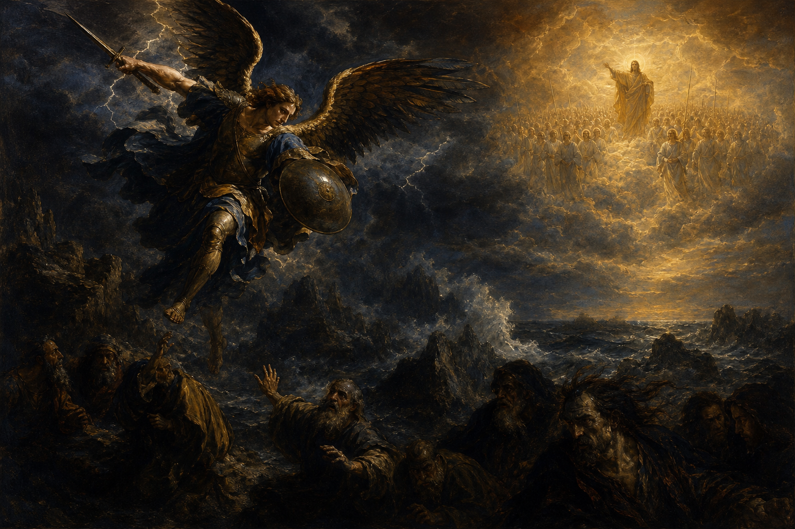

New Testament · Book 26 of 27
Jude
A short, urgent letter calls believers to contend for the faith against ungodly men who have crept into the church unnoticed.
Jude set out to write about the faith all believers share, but changed course to sound an alarm about teachers twisting grace into license.
Now unto him that is able to keep you from falling, and to present you faultless before the presence of his glory with exceeding joy.
What happens in Jude
Jude, identifying himself as a servant of Jesus Christ and brother of James, writes to urge his readers to "earnestly contend for the faith." Certain men, he warns, have crept in unawares, turning the grace of God into an excuse for immorality and denying the Lord. He draws on vivid historical and natural pictures — Israel in the wilderness, fallen angels, Sodom and Gomorrah, wandering stars, clouds without water — to show the certainty of judgment on such corruption, and quotes the ancient prophecy of Enoch that the Lord is coming with ten thousands of his saints to execute judgment. Against this darkness, he tells believers to build themselves up in their most holy faith, pray in the Holy Spirit, keep themselves in the love of God, and show mercy to those who waver, even as they are rescued from the fire.
Why it matters
Jude's brevity carries unusual force, combining stark warning with one of the New Testament's most quoted closing doxologies. It remains a plain-spoken reminder that love for the church includes vigilance for the truth it holds.